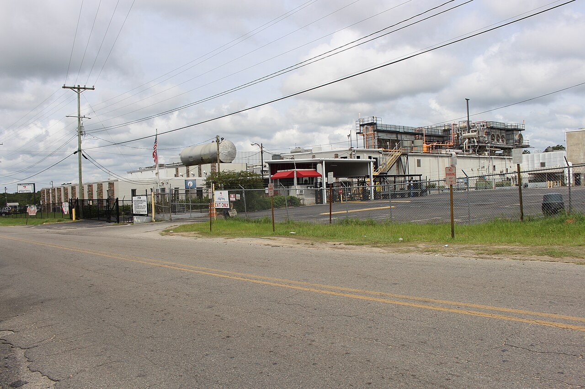
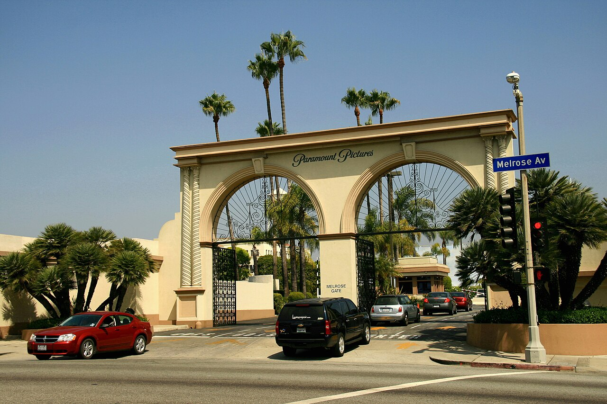

Vol. I · No. 91 · Thursday, August 20, 2026 · 18 items · ~16 min read
Treasury blinked at the long end, the Fed named the AI boom, and an envoy stepped between Israel and Turkey.
Markets & Deals · Washington · August 19
Treasury doubles its long-end buybacks on the morning a 20-year auction tailed
The Treasury Building in Washington. The department told the market on Wednesday it would at least double the size of its long-end liquidity-support buybacks from September 9. — Wikimedia Commons
The U.S. Treasury said on Wednesday it will at least double the size of its operations in the two longest nominal coupon sectors, raising the maximum from $2 billion to at least $4 billion per operation for the 10-year-to-20-year and 20-year-to-30-year buckets. The change takes effect September 9 and runs through the balance of the refunding quarter, to November 4. It landed the same morning the department sold $16 billion of 20-year bonds at a high yield of 5.204 percent, roughly four basis points above where the security had been trading just before the bidding closed, with a of 2.53 times, the weakest cover since February and the second-highest 20-year auction yield on record.
Treasury's stated rationale was technical. The release said the increase "reflects Treasury's desire to provide greater liquidity support in longer-dated nominal sectors where there is consistent strong sponsorship from market participants," citing the volume of high-quality offers it routinely receives. The timing said something else. Two weeks earlier the August had indicated buyback sizes would hold steady. On Tuesday the 30-year yield had touched 5.33 percent, its highest level since 2007. After Wednesday's announcement the long bond rallied as much as nine basis points to around 5.19 percent, and the S&P 500 broke a three-session losing streak.
The hawkish counterweight arrived at two o'clock, when the Federal Reserve published minutes showing several officials thought a rate increase might be warranted. So investors ended the day holding two facts that do not sit easily together: a central bank inching toward tightening, and a debt manager quietly expanding its capacity to absorb the long end. Treasury will say more about buyback sizing at the November refunding.
"The current maximum size of $2 billion per operation will be at least $4 billion per operation."
— U.S. Department of the Treasury, August 19
Markets & Deals · Washington · August 19
Fed minutes name the AI investment boom as an inflation risk, and $680 billion leaves the chip complex
Minutes of the July 28 and 29 meeting, released Wednesday afternoon, show that hawkish sentiment ran well past the three regional presidents who formally dissented. The committee held at 3.50 to 3.75 percent, over objections from of Dallas, Beth Hammack of Cleveland and Neel Kashkari of Minneapolis, each of whom wanted a quarter point. Several other officials said tightening "may be needed" if inflation did not decline. The dissenters tied their concern to supply shocks and to the AI investment boom, an unusually direct statement that capital expenditure on data centers and power is now a live input to the inflation forecast rather than a growth story.
The tape agreed, at least about the risk. The fell roughly 5.4 percent over three sessions, its steepest run since March and more than $680 billion of combined market value. Nvidia gave up as much as $153 billion, trading down about 2.2 percent to $220.08 intraday before paring; AMD and Intel each fell around 4 percent, with AMD slipping under $500. July inflation eased slightly and unemployment held at 4.1 percent. Nvidia reports on August 26.
The World · Idlib · cross-spectrum LLLLRR
A US envoy calls Israel's strike on a Syrian airbase an "unnecessary escalation" and says Ankara nearly answered it
Eight Israeli airstrikes hit in Idlib overnight on August 17, cratering the runway and storage buildings hours after a Turkish military delegation had visited to discuss reactivating the field. No casualties were reported. Netanyahu's office said Syria was "on the verge of breaching" a status-quo security understanding by hosting Turkish troops. On Wednesday , the US ambassador to Turkey and special envoy for Syria, wrote that the strikes "constitute an unnecessary escalation that does not advance regional stability," and said separately they "carried a real risk of rapid escalation into a direct military confrontation between Israel and Turkey as well as Syria."
Netanyahu, asked about the Turkish build-up in a Wednesday podcast interview, said: "Don't. The message was conveyed but apparently they didn't hear it, so we made sure they understood it better." The IDF chief of staff, Lt. Gen. Eyal Zamir, toured troops in the Syrian buffer zone the same day. Reuters reported that Mossad director Roman Gofman spoke by phone with Syrian foreign minister Asaad al-Shaibani on August 14, one of the highest-level contacts since Assad fell, and that Turkey's presence was on the agenda. Washington's private assessment reportedly credits the Israeli intelligence while its public one does not credit the strike, and American officials remain frustrated that Israel has not activated the agreed with Damascus in January.
Framing noteTurkey's foreign ministry called the strike a product of Netanyahu's "expansionist and destabilizing policies" and a violation of "Syria's territorial unity and integrity," a line carried prominently by Fox News. Al Jazeera read it as a deliberate message to Damascus and Ankara about who sets the terms in post-Assad Syria; the Israeli framing on offer everywhere is pre-emptive enforcement of an agreed status quo.
Artificial Intelligence
Capability, the labs, and the law and markets they are rewriting
AI · San Francisco · August 19
OpenAI tries to separate misuse detection from surveillance, keeping zero data retention intact
The Pioneer Building in San Francisco's Mission District, OpenAI's headquarters. — Wikimedia Commons
OpenAI began testing a system it calls on Wednesday, designed to flag risk patterns that emerge across multiple sessions rather than judging a single prompt, while keeping the underlying prompts and outputs unreadable to OpenAI staff. The point is to preserve the guarantee the company sells to enterprise and API customers, who are the only ones covered at this stage. Free, Plus, Go and Pro consumers are not. A full rollout and a technical white paper explaining the mechanism are expected in September.
Axios framed the launch as a deliberate contrast with , which currently requires data logs for its own safety monitoring, and the contrast is the commercially interesting part. Safety monitoring and confidentiality have until now been sold as a trade: a customer who wants the vendor to catch abuse accepts that the vendor can read the traffic. OpenAI is arguing the two can be decoupled, which is a claim about architecture that a white paper will either support or not.
AI · Brussels · August 19
ChatGPT advertising crosses into 31 European markets on Monday, unpersonalised at launch
OpenAI said on Wednesday that ChatGPT ads begin appearing in 31 European countries from Monday, August 24, including Germany, France, Spain, Italy, the Netherlands, Poland, Switzerland and the Nordics. It is the largest geographic expansion of the advertising business since its US launch in February, and it arrives with the targeting deliberately clipped: ads draw only on the current conversation topic, approximate location, device type, time of day and language, with no personalisation from user history. Ads appear only on the Free and Go tiers; Plus, Pro and Enterprise stay clean.
Advertiser access at launch runs through OpenAI's own Ads Solutions team, agency partners and technology partners, with self-service through an Ads Manager promised later. The restraint is not modesty. Personalised advertising in the European Union runs through the built by the GDPR and the , and is the one route into the market that does not require building it.
Markets & Deals
Capital markets, sponsors, and the mechanics underneath the headline number
Markets & Deals · Greeley · August 18–19
JBS offers no premium for the last 18 percent of Pilgrim's Pride, and the special committee has seen this film before

A Pilgrim's Pride facility in Douglas, Georgia. JBS already owns about 82 percent of the company. — Wikimedia Commons
JBS N.V. has made a non-binding proposal to buy the roughly 18 percent of Pilgrim's Pride it does not already own, offering 2.086 JBS Class A shares for each Pilgrim's share. That implies about $28.49 a share and values the minority stake near $1.2 billion, and JBS did not state a premium because there effectively is not one: the exchange ratio prices the stub at close to where it was already trading. Pilgrim's shares rose about 6.7 percent in premarket dealing on Wednesday and JBS added about 1 percent. The proposal goes to a of independent directors with its own legal and financial advisers.
This is the second attempt. JBS tried the same buy-in during 2021 and 2022, raised its offer to $28.50 a share in cash, and was told by the special committee that the price was inadequate. Trade reporting this week indicates the newly forming committee has already signalled the current terms are not enough. The structural point is that a by an 82 percent holder is not a market test of anything; the only price discovery available is whatever the committee can extract, and a stock-for-stock ratio with no puts the minority's recovery on JBS's own share price.
Markets & Deals · New York · August 19
Lyntris prices below range and opens as LYNX, with two thirds of the deal going to selling holders
The defence-technology Lyntris priced its initial public offering at $17.50 a share, below the marketed $19 to $22 range, selling 17 million shares for roughly $298 million. Of those, 5,714,286 were primary shares issued by the company and 11,285,714 were sold by existing stockholders, meaning about two thirds of the proceeds go to sellers rather than to the business. Evercore ISI, Citi, Guggenheim Securities, BofA Securities, Baird, Raymond James and William Blair ran the books, with a 30-day over 2,550,000 further shares from the selling holders. The stock began trading on the New York Stock Exchange on Wednesday under LYNX, and the offering was expected to close today.
Lyntris sells what it calls sense-to-act connectivity and battlespace-awareness hardware and software, assembled by Trive Capital out of smaller defence suppliers. Renaissance Capital had marketed the deal at up to $492 million on the range. Coming in at $298 million is not a failed deal, but it is a repricing, and it is a useful data point on how much the market will pay for a sponsor-built platform in a sector that has been the easiest story to tell all year.
Markets & Deals · New York · August 19
WhiteFiber upsizes its convertible to $270 million to buy GPUs, and pays for it in dilution
WhiteFiber priced $270 million of 5.00 percent convertible senior notes due September 2032, upsized from the $250 million it announced, with initial purchasers holding a 13-day option over a further $40 million. The initial conversion rate of 29.5530 shares per $1,000 principal puts the conversion price near $33.84, a of about 25 percent over Tuesday's close. Interest is payable each March 1 and September 1 from March 2027. Roughly $118.5 million of the proceeds refinances the company's existing 2031 notes; the rest funds data-centre expansion and GPU servers. The notes were sold under to qualified institutional buyers, and the shares fell on the pricing.
A 25 percent premium on a 5 percent coupon is not a cheap financing, and half of it is a refinancing rather than new money. It is worth setting the deal beside the Fed minutes above: this is what the AI build-out looks like below the tier, where the capital comes with a coupon, an equity option and a share price that falls on announcement.
Markets & Deals · South Florida · Miami · August 19
Bloomberg dissects the Miami software playbook, and Accelerant shows what a 49 percent premium buys
Bloomberg published a study on Wednesday of how , which moved its headquarters to Miami, courts the customers of its portfolio companies directly, a practice the piece calls a customer bear hug. The live illustration is Accelerant Holdings, which the firm agreed on August 13 to take private at $20.25 a share in cash, valuing the insurance-technology company above $4 billion at a premium of about 48.79 percent to the unaffected price. The agreement carries a running to September 22. Morgan Stanley and Houlihan Lokey advised Accelerant and its special committee, Paul Hastings and Goodwin Procter acted as legal counsel, and BMO Capital Markets and Wells Fargo advised Thoma Bravo. The firm separately closed its roughly C$650 million all-cash acquisition of Kneat.com on August 11.
A 49 percent premium is unusual; sponsor take-privates more commonly clear in the twenties. Paying it and then buying a four-week go-shop is a legible trade, since the premium is what makes an interloper unlikely and the go-shop is what makes the board's process defensible. Elsewhere on the local calendar, Royal Caribbean's $1.25 billion of 5.550 percent due 2034, priced on August 6 through BNP Paribas, BofA and Citigroup to term out floating-rate borrowings, were due to settle today.
Law & the Courts
Rulings, regulators, and the economics of the profession
Law · New York · August 19
BigLaw revenue rose 11.7 percent in the first half, and the expense line is now an AI line
Citigroup Center in Manhattan. Citi's Law Firm Group compiles the industry's most closely watched financial benchmark. — Wikimedia Commons
Citi's reported that revenue across the large-firm market grew 11.7 percent in the first half of 2026, on of 4.2 percent, which the report notes is well above a historical average of 1.5 to 2 percent. Total expenses rose 9.7 percent, and Citi attributes part of that to firms' investment in AI tools and infrastructure. Daniel Greenfield, a director in Citi's law firm advisory group, is quoted saying early third-quarter indications show demand holding up.
The spread is the story. Revenue growing about two points faster than costs is a good year by any measure, but the composition has changed: a rising share of the expense line is now technology spend that does not bill and does not , and it is being underwritten by a demand cycle running at more than twice its normal rate. Firms are financing a structural investment out of a cyclical windfall. That works until the cycle turns.
Law · Raleigh · cross-spectrum LLLC
The Justice Department tells a court that Comey's seashell post was a coded call to kill the president
Prosecutors in the filed their opposition on August 18 to former FBI director James Comey's motion to dismiss United States v. Comey, No. 1:25-cr-00272, as a . The two counts, filed in April 2026, arise from a 2025 social media post showing seashells arranged to read "86 47." The government's brief calls the arrangement "a coded message... meaning 'kill' or 'get rid of'" and "a serious expression of an intent to do harm to the President of the United States," and cites language from a novel Comey wrote in arguing intent.
Comey's position is that "86 47" is "a well-known political slogan that expresses opposition to the president," and his motion separately alleges the department conducted unlawful surveillance of him. The judge has not ruled. The interesting question is not whether the slogan is menacing but whether a prosecution can rest on a reader's decoding of an ambiguous symbol, which is exactly the terrain the First Amendment makes hardest for the government.
Law · Washington · August 19
Former Justice Department civil rights lawyers tell Congress they left to protect their bar licences
The forwarded a 25-page whistleblower disclosure dated August 17 to four congressional committees on behalf of Haley Van Erem, a former Justice Department civil rights attorney. The disclosure alleges that the department's Task Force to Combat Antisemitism functioned largely to reverse engineer probes and legal attacks against universities, pressuring schools into settlements "where no cognizable violations existed," with Columbia, Brown and Harvard named as targets of the underlying investigations. Law and fact, the disclosure says, "were subordinate to political priorities rather than the enforcement of civil rights." Van Erem and two other former attorneys sent parallel disclosures to the Office of Special Counsel and to inspectors general at Justice and Health and Human Services.
The claim that carries beyond this administration is the professional one. These lawyers say they resigned because staying exposed them to bar discipline for misleading tribunals, disregarding court orders and pressing claims in bad faith. Government lawyers have always had a that can collide with a supervisor's instruction; what is unusual is a group treating that collision as a resignation-forcing event and putting it in writing to Congress.
The World
What actually moved, with the tiers that reported it
The World · Strait of Hormuz · cross-spectrum LLLR
Hormuz stays shut, Trump reverses himself on talks inside a day, and Brent holds near $92
A US warship passing a tanker at the Strait of Hormuz. Crossings have fallen to a fraction of pre-war volumes. — Wikimedia Commons
Brent traded near $92.36 a barrel on Wednesday, up marginally on the day and extending a four-session run of more than 5 percent, as the strait stayed effectively closed. Tanker crossings tracked by MarineTraffic fell from 15 on Friday to 11 on Saturday to 6 on Sunday; a separate 24-hour count around Wednesday identified 15 vessels plus two tankers visible only on satellite imagery and not transmitting . More traffic is now hugging the Omani side under US naval protection. One tanker, the Amara, made at least five U-turns and then stopped near Iran's Qeshm Island while trying to enter the Gulf empty.
Trump said on Tuesday there were no talks planned with Iran and reportedly told aides to cut contact with Iranian negotiators, then said on Wednesday he "might be open" to renewing them: "Maybe at some point, but right now the situation is so good." The US naval blockade imposed in mid-April remains, in his words, in full force and effect, targeting roughly 1.5 million barrels a day of Iranian exports; the maritime intelligence firm describes a complete halt to loadings from . Tehran's stated price for reopening the strait is unchanged: sanctions relief, released assets and compensation. Saudi Aramco resumed loading from inside the strait last week.
The World · Washington · cross-spectrum LLCR
Trump says he expects to meet Kim this year, days after halving the exercise Seoul was already running
Asked by reporters at the White House on Wednesday whether he would meet Kim Jong Un later this year, Trump said: "Yeah, I will be." He added: "I get along with him great. He has 57 very powerful nuclear weapons. He's gonna be fine." It would be the first meeting of his second term, after Singapore in 2018 and Hanoi and the demilitarized zone in 2019, none of which produced a denuclearisation agreement. Reporting points to the November summit in Shenzhen as a possible setting. Pyongyang's signals are mixed: the North's has said the leaders' relationship "remains excellent" while the North has separately rebuffed the idea of a meeting.
The context is the exercise. On August 16 Trump ordered Defense Secretary Hegseth to substantially reduce American participation in , calling the drills costly and an inappropriate and hostile signal, and tying the reduction to Seoul's refusal to help against Iran. The exercise began August 17 and will now end tomorrow rather than August 27. North Korea had called it a rehearsal for aggressive war.
The World · Gaza City · single-tier coverage: LL
Israel keeps striking Gaza and the Board of Peace says nothing, as Washington books its first $206 million for the stabilisation force
Israeli aircraft fired two missiles at a cafe at Gaza City's port on August 18. The Palestinian agency Shihab reported six killed including a child and ten wounded; the IDF confirmed four dead and identified them as commanders in Hamas's Beit Lahia battalion, one of whom it said took part in the October 7 attack. A separate strike on a police station the same day killed nine, including a 13-year-old girl. The strikes came a day after Jared Kushner and the envoys Tony Blair and Nickolay Mladenov urged Netanyahu in Jerusalem to respond only to imminent threats. The Board had not commented as of Wednesday and did not respond to a request for one.
The concrete development is money. The State Department has notified Congress, in letters dated July 30 and obtained by Reuters, that it will provide $206 million for the , $200 million for equipment, infrastructure and vehicles and $6 million to repurpose American armoured vehicles. It is the first hard US spending on the force. Separately, the UN Secretary-General's spokesman called Israeli national security minister Itamar Ben Gvir's call to kill "30 or 40" Gazans nightly "appalling... dehumanizing, and... dangerous."
Entertainment & EASL
The contract, the rights, the suit, and the league economics
Entertainment · Los Angeles · August 19
Los Angeles County puts $2.78 billion and 4,500 jobs on the Paramount merger, and hands the states an exhibit

The gate at Paramount Pictures in Hollywood. The county's report lands inside a live antitrust challenge to the studio's $111 billion acquisition of Warner Bros. Discovery. — Wikimedia Commons
The Los Angeles County Department of Economic Opportunity and CVL Economics delivered their final 120-day report on the Paramount Skydance acquisition of Warner Bros. Discovery to the Board of Supervisors on August 18, and it was published on Wednesday. It projects $1.26 billion in lost wages, $2.78 billion in lost economic value, $4.06 billion in lost business output and $547 million in lost tax revenue, of which $78.6 million is local. Nearly 4,500 direct film and television jobs are at risk in the county over three years, and 10,360 in total, including 2,661 indirect positions at prop houses, printers and transport vendors and 3,204 induced jobs tied to production workers' local spending.
The timing is not incidental. Twelve state attorneys general and the Writers Guild are challenging the $111 billion deal before Judge in the Northern District of California, with fact discovery opened August 17 and trial set for March 2027. Paramount has moved for an order requiring the states and the guild to post a bond of $1,884,726,092.73 by September 30 or see the hold dissolve, built off a of about $6.97 million a day from October 1. Cross-filings are due August 26. California's attorney general, Rob Bonta, has called the bond request a bid for a "do-over," noting that Paramount and WBD are "two sophisticated companies who willfully decided to include a costly ticking fee as a provision in their merger contract."
Entertainment · Indianapolis · August 19
LIV Golf cancels its own finale, halves the purse, and has its bank accounts frozen by a production vendor
LIV Golf confirmed on Wednesday that its Michigan event, scheduled for August 27 to 30, is cancelled and tickets refunded, making this week's Indianapolis stop the 2026 season finale. The Telegraph reports the individual champion's payout falls from £3 million to £1.5 million and that roughly £40 million comes out of team purses league-wide. That follows the cancellation of LIV Golf Louisiana in June, which cost an estimated $30 million. Chief executive says an unnamed strategic investor is moving to anchor a transaction replacing the , which withdrew as primary backer in April, and that more than a dozen further parties are interested in a multi-partner minority structure.
The vendors are not waiting. Denver-based Fresh Tape Media sued in New York State Supreme Court for $1.23 million in unpaid invoices from LIV Golf Week in West Palm Beach in January, rejected settlement offers of $200,000 and then $150,000, and obtained an freezing LIV bank assets, with sheriffs serving subpoenas on ten to twelve New York banks from August 7. Mobii Systems Group sued last month over more than $1.1 million. Separately, reporting says Jon Rahm will play his last LIV event in Indianapolis under a deal to rejoin the PGA Tour in 2027.
Entertainment · New York · August 19
The GTA VI leaker states his terms, and Rockstar has nine days until its Netflix reveal
The account behind Tuesday's leak of Grand Theft Auto VI gameplay footage and an alleged map of the fictional state of posted further material on Wednesday and, unusually, explained itself. The leaker, operating as Cyberleek, says the motive is protest at Rockstar's decision to make the game digital only, and has demanded a public statement, an apology and a "concrete commitment to be better" before stopping. Rockstar and issued takedown notices to X, Streamable and Reddit within hours of the first clips, which is broadly how the industry reads a leak as authentic.
The clips run about a minute each, feature the protagonist Jason Duval, and show a six-star wanted level, a stamina bar in fistfights, fuel and engine gauges and what players are calling a karma system. The timing is the sharpest part: Grand Theft Auto VI: An Extended Look premieres on Netflix on August 27 at noon Pacific, Rockstar's first use of the platform, simulcasting to YouTube and the game's own site six hours later. Fired former Rockstar developers have reportedly circulated messaging asking fans not to boycott the studio over the leak.
Compiled by Matthew Yellin · mattyellin.com · Est. May 2026 · A cross-spectrum brief drawn each morning from wires, filings, and the trade press